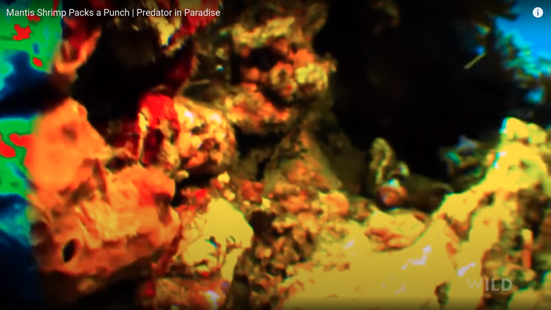
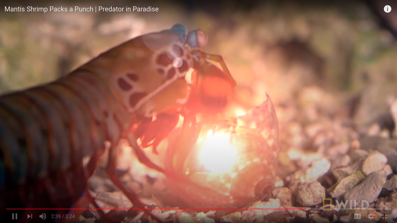

Odontodactylus scyllarus's scientific classification
| Kingdom | Animalia |
|---|---|
| Phylum | Arthropoda |
| Subphylum | Crustacea |
| Class | Malacostraca |
| Subclass | Hoplocarida |
| Order | Stomatopoda |
Powerful, all-seeing eyes
Its eyes have 16 color-receptive cones. Compared to our eyes having only 3, that is amazing! Let's try and understand how they seem the world with the following picture:
Earth-shattering punch
Its unique phisiology allows it to punch super hard! As we will see later on a video and right below on a picture, its prey try, hopelessly, to hide from Stomatopoda in their shells. Little do they know of Stomatopoda's strength: a punch that, for a moment, increases the surrouding water's temperature to that of the sun's surface. WOW. Let's see that in action (with some dramatic visual effects, of course):
